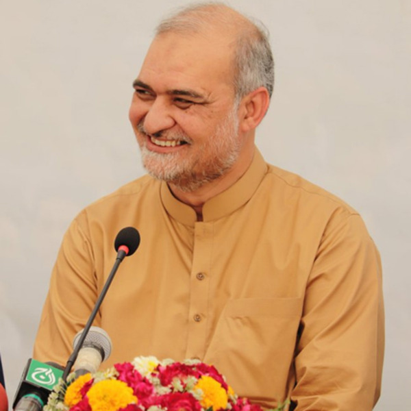

"Imran Khan: A Legacy of Leadership as Former Prime Minister"
.jpg) Imran Khan, the former Prime Minister of
Pakistan, left an indelible mark on the nation during his tenure. Leading with a vision of a "
Naya Pakistan" (New Pakistan), Khan focused on key reforms in governance, economy, and social development.
His leadership was characterized by a commitment to anti-corruption initiatives, poverty alleviation, and
investment in human capital. As Prime Minister, Khan faced numerous challenges, navigating geopolitical
complexities while championing domestic policies aimed at fostering inclusivity and progress. His
administration worked towards enhancing transparency, digital governance, and environmental sustainability.
Whether lauded for his efforts in building the Ehsaas Program for social welfare or criticized for economic
challenges, Imran Khan's term as Prime Minister was marked by a determined pursuit of change and a
dedication to shaping a resilient and prosperous future for Pakistan.
Imran Khan, the former Prime Minister of
Pakistan, left an indelible mark on the nation during his tenure. Leading with a vision of a "
Naya Pakistan" (New Pakistan), Khan focused on key reforms in governance, economy, and social development.
His leadership was characterized by a commitment to anti-corruption initiatives, poverty alleviation, and
investment in human capital. As Prime Minister, Khan faced numerous challenges, navigating geopolitical
complexities while championing domestic policies aimed at fostering inclusivity and progress. His
administration worked towards enhancing transparency, digital governance, and environmental sustainability.
Whether lauded for his efforts in building the Ehsaas Program for social welfare or criticized for economic
challenges, Imran Khan's term as Prime Minister was marked by a determined pursuit of change and a
dedication to shaping a resilient and prosperous future for Pakistan.
"Former Karachi mayor Naimatullah Khan late"
.jpg) Naimatullah Khan was the Mayor of Karachi from August
2001 to June 2005. Naimatullah Khan has been involved with Islami Jamiat-e-Talaba, and is a senior member of
Jamaat-e-Islami Pakistan. Naimatullah Khan was born in Ajmer, Rajasthan, British India on 1 October 1930 to
Abdul Shakoor Khan,a railway postmaster and Bismillah Begum, a housewife. He was the third child of Abdul
Shakoor Khan. He had two elder sisters and two younger brothers. In 1940, his father died of tuberculosis. The
family then moved to Shahjahanpur, Uttar Pradesh, British India to live with their maternal relatives. He built
himself a proper house in 1967 in which he lived until 2011. Naimatullah Khan was always inspired by the
writings and works of Maulana Maududi, the founder of Jamaat-e-Islami. His enternce into politics started as far
back as late 1960s when he helped organise political programs at his own house. He formally joined the party in
1974 while at Hajj in Makkah. Khan worked diligently for the party slowing rising through the ranks. In 1977
Khan was jailed in Sukkur for holding a rally in Karachi at a time when public gatherings were not allowed due
to orders by then Prime Minister Zulfiqar Ali Bhutto. Khan spent three months in jail. Khan recalls how he met
the infamous General Niazi at the Sukkur jail. Martial law was imposed in 1977 and elections were held in 1979.
Khan was the top most contender to become the mayor of Karachi. Citing personal issues Khan refused to take the
office. Khan at that time had nine kids most of whom were very young. Khan realised his children were too young
for him to take such an important role. As his replacement Abdul Sattar Afghani was made the mayor who served in
the capacity until 1987 after getting re-elected in 1983. Non political elections were held in 1985 and Khan won
the PS-81 constituency from Karachi. He subsequently became the Leader of Opposition of the Sindh Assembly from
1985–88. President Zia-ul-Haq was killed in a plane crash in 1988 and all the prevailing assemblies were
dissolved. Khan later became the Jamaat-e-Islami Ameer of Karachi in 1990. He served in this capacity until 2001
when he had to resign to take the office of the Mayor of Karachi. In the meantime Khan also retired from his law
practice in 1991 after a 34-year career.
Naimatullah Khan was the Mayor of Karachi from August
2001 to June 2005. Naimatullah Khan has been involved with Islami Jamiat-e-Talaba, and is a senior member of
Jamaat-e-Islami Pakistan. Naimatullah Khan was born in Ajmer, Rajasthan, British India on 1 October 1930 to
Abdul Shakoor Khan,a railway postmaster and Bismillah Begum, a housewife. He was the third child of Abdul
Shakoor Khan. He had two elder sisters and two younger brothers. In 1940, his father died of tuberculosis. The
family then moved to Shahjahanpur, Uttar Pradesh, British India to live with their maternal relatives. He built
himself a proper house in 1967 in which he lived until 2011. Naimatullah Khan was always inspired by the
writings and works of Maulana Maududi, the founder of Jamaat-e-Islami. His enternce into politics started as far
back as late 1960s when he helped organise political programs at his own house. He formally joined the party in
1974 while at Hajj in Makkah. Khan worked diligently for the party slowing rising through the ranks. In 1977
Khan was jailed in Sukkur for holding a rally in Karachi at a time when public gatherings were not allowed due
to orders by then Prime Minister Zulfiqar Ali Bhutto. Khan spent three months in jail. Khan recalls how he met
the infamous General Niazi at the Sukkur jail. Martial law was imposed in 1977 and elections were held in 1979.
Khan was the top most contender to become the mayor of Karachi. Citing personal issues Khan refused to take the
office. Khan at that time had nine kids most of whom were very young. Khan realised his children were too young
for him to take such an important role. As his replacement Abdul Sattar Afghani was made the mayor who served in
the capacity until 1987 after getting re-elected in 1983. Non political elections were held in 1985 and Khan won
the PS-81 constituency from Karachi. He subsequently became the Leader of Opposition of the Sindh Assembly from
1985–88. President Zia-ul-Haq was killed in a plane crash in 1988 and all the prevailing assemblies were
dissolved. Khan later became the Jamaat-e-Islami Ameer of Karachi in 1990. He served in this capacity until 2001
when he had to resign to take the office of the Mayor of Karachi. In the meantime Khan also retired from his law
practice in 1991 after a 34-year career.
"Hafiz Naeem ur Rehman True Voice of Karachi"

Leader of Jamaat-e-Islami Karachi Chapter
Hafiz Naeem ur Rehman has been leading the Karachi chapter of Jamaat-e-Islami, one of the most organized and
educated political parties, for the last 10 years. He has been encouraged and acknowledged for his skills as a
national-level leader thanks to his hard work and determination. Almost everyone knows about Hafiz Naeem ur Rehman’s
struggle against K-Electric’s dis-service to the people of Karachi and government’s favoritism to the utility
company.
Public Aid Committee Patron
s the chief patron of the Public Aid Committee, Hafiz Naeem ur Rehman realizes all the issues plaguing the city.
Along with other members, he is determined to provide Karachiites with a productive development direction so
that they can earn, spend and live in peace and prosperity.
President Alkhidmat Karachi
Working as the head of Al-Khidmat Foundation Karachi, Hafiz Naeem ur Rehman has helped devise major strategies
to transform it into a well-equipped, problem-orientated, task-focused and digitally engaged welfare
organization, which is now also addressing the necessities of students, youngsters, job seekers and vocational
training holders living in Karachi.